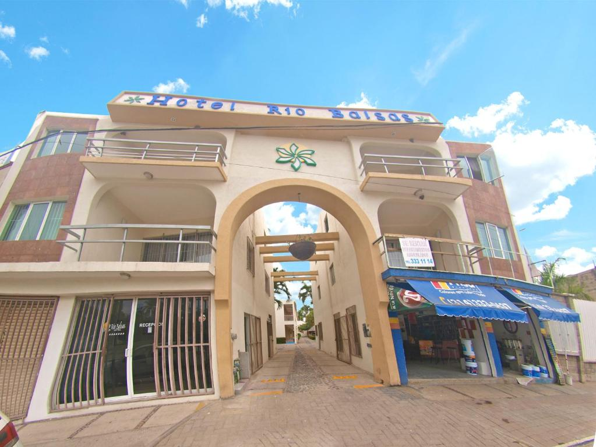

Hotel Rios

★★★★
Informações Gerais
📍Av. Gov. Luiz Rocha, N° 216 - Potosi, Balsas - MA
📞Telefone: (99) 98529-9393
🕒Horário de funcionamento: O Hotel Rios em Balsas, MA, oferece recepção 24 horas, Wi-Fi gratuito e quartos com mesa de trabalho e TV de tela plana. O horário de funcionamento da recepção é 24 horas, e o café da manhã é servido de manhã.